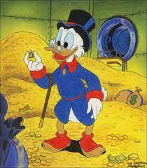
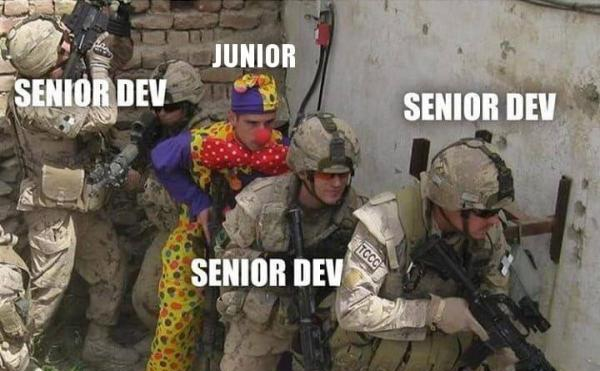
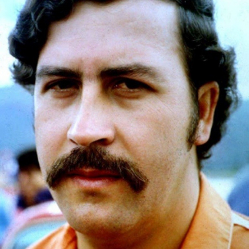

Technik Ekonomista - Lubimy liczyć pieniążki

Technik Informatyk - Właściwie to my tylko w gry gramy
Technik Programista - cout << "Nauczymy cię jak napisać ,,Hello world!'' " << endl;

Technik Hotelarstwa - Hotel? Trivago!
Tachnik Technologii Chemicznej - 50% kokainy powstaje w Kolumbii a drugą połowę robimy my
